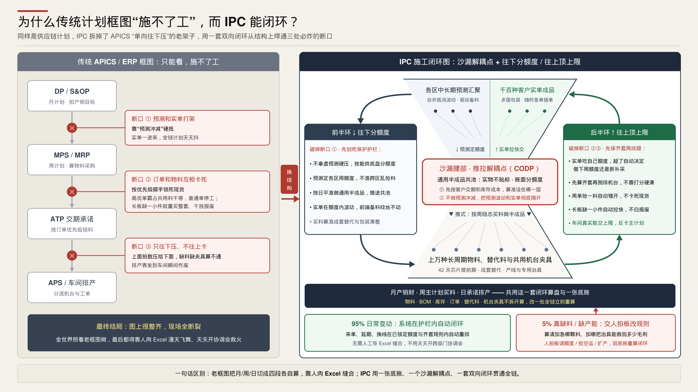

打开浏览器就能试 · 不装软件 · 背后与本仓开源 C++17 / Python 验算代码完全同一套算法

哪怕预测 100% 准、库存数据 100% 干净：高优先级需求 D1 需要专用件 M1 + 共用件 M2；普通优先级需求 D2 需要共用件 M2 + 专用件 M3。随便改下面到货天数，看看现有 SCP / APS 系统因没看到 KPI 耦合，按优先级顺手锁死现货是怎么自己把自己卡死的。
替代组 G1 库里已经躺着高价主芯片 A1，只差配套小料 B1（在途花钱可拉快）；新替代组 G2 没现货，要整套重买。对比现有 SCP / APS 跳过缺件组重买整套，和 IPC 算清实际新增现金流的做法。
先过两道硬门槛筛出合格层（第一关：后道加工期不能超过客户最多肯等的天数；第二关：不能提前把国别或客户标签做死），再看把通用半成品收口成共池能省多少安全库存。勾选下方“旧工艺早镭雕”，还能直接算出改工艺后移差异化工步到底值多少钱。
前半环按每周真实能供底盘切保护额度，再按每天产线能力平准切到每一天（防大渠道第一天把产线吃光）；后半环客户实单直接吃自己的额度，只有超了额度才结合全月总上限和采购提前期，自动决定借下周额度还是新下采购单。
现有 SCP / APS 按比例乘完之后各自向上凑整，结果每家多凑半盘，最后买回一大堆呆滞料。IPC 逐家按最小包装凑整后，立刻把剩下的量按比例重新分给后面几家，总量不多不少刚好守恒。
工艺或客户合同经常规定：副料（如 5000mAh 电池）可单向代低配且在总产出中的占比绝不能超过 30%。当主料缺料只齐套 500 台时，现有 SCP / APS 机械按“总需求 1,000 × 30% = 300 颗”派副料，导致实际占比飙到 37.5% 直接违约；IPC 严格按主料实际齐套量锚定截断在 214 颗（29.97%），并且对认证不匹配直接硬拦截归零。
很多工厂把前道半成品和后道贴标拆成两本孤立账：销售看后道贴标只要 1 天，就答应欧洲 500 台、非洲 400 台、拉美急单 250 台全部在第 4 天交货（共 1,150 台）；结果前道通用裸机受限于每天 300 台产能，第 3 天还因等在途主芯片停工 1 天，到第 3 天底只攒出 600 台裸机，现场直接爽约 550 台。IPC 第一段同时卡住日产能和芯片到货日算出真实裸机池，第二段先按保护额度拦住拉美超额抢货，再按裸机真齐套日加贴标天数给出诚实交期。
多层 BOM 叠加上替代料、分档晶粒和各国安规认证后，传统数据库每展开一次或反查一颗缺料件都要递归连接多张表。IPC 给每个节点预先编好“[进入序号..结束序号]”先序区间，判断任意子件属不属于某条产品线只需一次大小比较；展开时同步按规格（高配代低配或同档严配）与国别认证剪掉不合规物料，并对多条支路共用的芯片做去重守恒汇总与向上反查。
区域 A（含战略保底需求）与区域 D（常规区域需求）共用同一颗稀缺核心芯片。现有 SCP / APS 直接按原始预测毛量下达非瓶颈外购件采购单，造成成千上万颗配套料买回来却缺芯装不出来；到了执行阶段又无独立额度桶保护，高优区一旦多下单就把常规区芯片抢空。IPC 严格走完四步闭环：先按各区专用件算出真实齐套上限，再在最紧瓶颈件上按“战略保底 + 剩余公平比例”切出保护额度，接着按额度上限逆向重算非瓶颈外购件（杜绝多买呆滞），最后在执行期各自吃各自的额度桶。